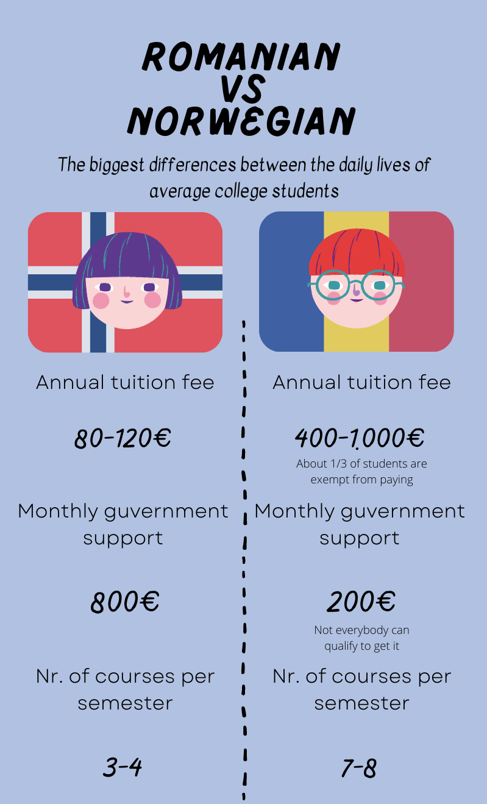

Ever since we were kids, we were sold this idea of a perfect life with a linear trajectory. Go to
school, study, go to college, study some more and then get a good job. However, once people reach the
college level, many of them realize that what they were told was just an unreachable ideal, and that
real life is more complicated than that.
In Romania, this pressure to go to college can be quite heavy, since people generally believe that you
can’t really do anything without a degree. Kids are taught that they should pursue a career in medicine,
IT or other popular and well-paid fields, this way ending up taking classes that they don’t enjoy or are
not suitable for them.
“I initially decided to go to college because of the pressure I felt from society, because that’s what
you’re ‘supposed to do’. Of course I understood that a degree is needed in order to find a good job, but
I felt pressured to rush into it.”
says Șerban Ghiulai, a Romanian student who decided to drop out of college in his second
semester because he discovered that what he was taught about architecture was not what he
expected.
Many students in Romania are the same. They choose a subject, many times at their parents’ wishes, and
end up dropping out and choosing something else instead, because their decision turned out to be wrong.
Besides the rushed decisions, another serious problem that caused up to a 40% dropout rate between 2014
and 2018 in Romania is the lack of financial support for young students. There are not many cities that
have universities, so most people have to move from their hometown in order to complete their studies.
Supporting yourself becomes incredibly difficult in this scenario. The annual tuition fees for Romanian
colleges are between 400 and 1000 Euros. Although some of the students with the best academic results
are exempt from this fee, this is already a huge expense for a family with a medium income. In addition,
the scholarships from the government are less than 200 Euros per month, and not everybody can qualify
for it.
“I have only attended one semester, and it has been online, so I haven’t encountered these kinds of
problems. Nevertheless, I am aware that students don’t receive a lot of support from our government and
I have known and heard of people that were forced to give up their studies because they were not able to
afford it.”
As a comparison to show how severe this situation is, we can take a look at the life of a Norwegian
student. Norway and Romania’s economies are by default extremely different, the standard of living being
much higher in Norway than it is in Romania. Still, we can notice that tuition fees in Romania are even
ten times higher than they are in Norway, but the government support is about four times lower.

This being said, we can clearly see that higher education is “expected” in Romania, but it is not
supported. In a country with around 19.2 million people, the college students represent only 1.9% of the
population, and even among these few students, only 26.3% of them actually finish their education and
get a college degree.